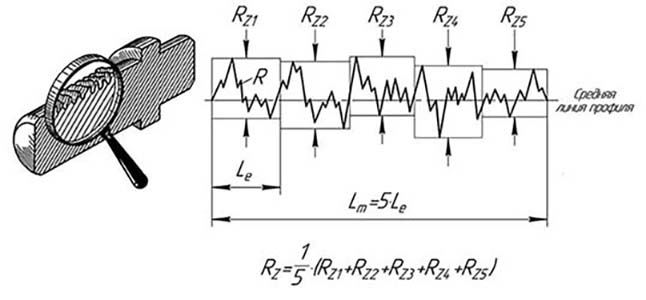

Общие сведения
Чтобы исчерпывающе раскрыть данный материал, обратимся за помощью к следующим стандартам:
- единая система конструкторской документации ГОСТ Р 2.316-2023 «Надписи, технические требования и таблицы в графических документах»;
- единая система конструкторской документации ГОСТ 2.105-95 «Общие требования к текстовым документам»;
- единая система конструкторской документации ГОСТ 2.052-2021 «Электронная модель изделия».
Любой чертеж помимо таких элементов, как собственное изображение детали, таблицы, размеры, которым она должна соответствовать, допустимые величины их предельных отклонений, характерных для отображаемого объекта, содержит также и некоторые дополнительные компоненты, которые записываются в виде текста – это технические требования (ТТ или тех. требования). ТТ выполняют в чертеже для необходимости указания сведений для изготовления и контроля за изготавливаемым изделием, которые невозможно или нецелесообразно выразить графически или условными обозначениями непосредственно у изображений изделия.
Текст ТТ в виде нумерованных пунктов располагают строго над основной надписью (см. ГОСТ 2.301-68 «Форматы» черт. 1) сверху вниз столбиком, ширина которого не превышает ширины основной надписи (185 мм). На форматах более А4 допускается размещение столбцов с текстом в два и более. Высота ТТ напрямую зависит от объема наполняемой её информации, они могут занять весь первый лист, тогда графическое изображение чертежа будет выполняться на последующих листах.
Между ТТ и основной надписью не допускается размещать надписи, таблицы, знаки маркировки, виды, разрезы, размеры и т.п. Исключением может быть предложение «Номер изменения проводящего рисунка.» при оформлении чертежа на деталь печатной платы.
Определившись с содержанием ТТ нужно знать, что есть область в основной надписи (рис. 1, границы отмечены красным), которая будет увеличиваться с ростом выпускаемых извещений на данный чертеж.
Рис. 1. Зарезервированная область таблицы изменений в основной надписи
Если в чертеже указывают единственный пункт тех. требований, то данный пункт не нумеруется.
ТТ записываются в определенной последовательности их применения в технологическом процессе, группируя вместе однородные и близкие по своему характеру требования:
- требования, предъявляемые к материалу, заготовке, термической обработке и к свойствам материала готовой детали (электрические, магнитные, диэлектрические, твердость, влажность, гигроскопичность и т.п.), указания
- материалов-заменителей;
- размеры, предельные отклонения размеров, формы и взаимного расположения поверхностей, массы и т.п.;
- требования к качеству поверхностей, указания об их отделке, покрытии;
- зазоры, расположение отдельных элементов конструкции;
- требования, предъявляемые к настройке и регулированию изделия;
- другие требования к качеству изделий, например: бесшумность, виброустойчивость, самоторможение и т.д.;
- условия и методы испытаний;
- указания о маркировании и клеймении;
- правила транспортирования и хранения;
- особые условия эксплуатации;
- ссылки на другие документы, содержащие технические требования, распространяющиеся на данное изделие, но не приведенные на чертеже.
Пункты технических требований должны иметь сквозную нумерацию. Каждый пункт технических требований записывают с новой строки.
В случае, если необходимо указать техническую характеристику изделия, её размещают отдельно от технических требований, с самостоятельной нумерацией пунктов, на свободном поле чертежа под заголовком «Техническая характеристика». При этом над ТТ помещают заголовок «Технические требования». Оба заголовка не подчеркивают.
Расшифровка технических требований
Ниже приведены примеры записей пунктов ТТ из чертежей деталей и сборочных единиц изделий, разберем подробно каждый пункт.
Пример №1

1 пункт.
Для расшифровки данной записи обратимся за помощью к следующим стандартам: ГОСТ 9013-59 «Металлы» Метод измерения твердости по Роквеллу, ГОСТ 8.064-94 «Государственная поверочная схема для средств измерений твердости по шкалам Роквелла и супер-Роквелла», ГОСТ 9031-75 «Меры твердости образцовые», ГОСТ 22975-78 «Металлы и сплавы».
Твердость детали (см. примеч. 1) составляет от 37 до 42 единиц, испытания проводились методом Роквелла (HR) c использованием шкалы С (см. примеч. 2). Индекс «э» эталон рабочий, т.е. данный эталон предназначен для воспроизведения шкал твердости Роквелла и супер-Роквелла и передачи их при помощи образцовых средств измерений рабочим средствам измерений, применяемым в стране, с целью обеспечения единства измерений.
Простыми словами в п.1 ТТ предъявляют к материалу детали требования по твердости тождественной твердости метизов, шкала твердостей по Роквеллу и Бринеллю приведена ниже см. рис. 2.
Рис. 2. Сравнение твердости изделий по системам измерения Роквелла и Бринелля
Для марок сталей 20, 35, 45, 65Г и некоторый сортов нержавеющей стали такая твердость может быть достигнута путем дополнительной термообработки – закалкой, отпуском и отжигом.
Примечания:
1. Согласно п.4 тех. требований отраслевой стандарт ОСТ4 ГО.070.014 своим названием «Детали радиоэлектронной аппаратуры» идентифицирует чертеж, как чертеж детали.
2. Стандартами установлено 11 шкал определения твёрдости по методу Роквелла (A; B; C; D; E; F; G; H; K; N; T), эти шкалы различаются типом индентора, испытательной нагрузкой и константами в формуле для вычисления твёрдости по результатам измерения.
2 пункт.
Все детали на чертеже образмеривают исполнительными и справочными размерами (с верхним индексом *), но есть чертежи где могут отсутствовать справочные или исполнительные размеры.
Исполнительные размеры – это те размеры, которые нужно работнику (токарю, фрезеровщику, слесарю или монтажнику) цеха или завода выполнить. Справочные размеры – это размеры которые не контролируются и не исполняются, например:
- приобретаемый листовой металл для изготовления детали уже имеет чистовую отделку поверхностей листа (лицевая и оборотная), поэтому на производстве повторную обработку не проводят, а, следовательно, в чертеже указывают размер на толщину листа для справок.
Материал пластинки: Лист х/к (А-ПН-0-1,0 ГОСТ 19904-90/К270В-4-II-Г-10 ГОСТ 16523-97);
- когда присутствует на графическом изображении детали двойственность размеров, тогда один из них становится справочным;
- если размер получен инструментом и исполняется несколькими размерами, то охватывающий размер нужно ставить для справок;
Материал петли: Лист х/к (А-ПН-0-2,0 ГОСТ 19904-90/К270В-4-II-Г-10 ГОСТ 16523-97);
- если в чертеже детали в качестве материала фигурирует металлопрокат (уголок, швеллер, тавр, двутавр и т.д.), то полки (стороны) указывают справочными размерами.
Материал детали указан: Уголок (25х3-В ГОСТ 8509-93/Ст3сп-II ГОСТ 535-88).
3 пункт.
Распространены несколько видов покрытий, чаще всего на производствах покрытия наносят: гальванические (см. примеч. 1) и лакокрасочные (краски, эмали или эмульсии и прочее), также часто можно встретить комбинированный тип покрытий гальваническое+лакокрасочное. Пример записи: «Покрытие Ан.Окс.хр./эмаль ПФ-115, бежевая, ГОСТ 6465-76».
Чтобы расшифровать запись Ц24.хр, воспользуемся помощью ГОСТ 9.306-85 «Единая система защиты от коррозии и старения. Покрытия металлические и неметаллические неорганические. Обозначения» и ОСТ 107.9.3001-87 «Покрытия металлические и неметаллические неорганические. Общие требования к выбору».
Ц24.хр – цинковое покрытие толщиной 24 мкм* (микрометры) с хроматированием.
Примечание. Гальванические покрытия подразделяются металлические (Ц6.хр, Кд15.хр, М18, Н9 и т.д.) и неметаллические неорганические покрытия (Хим.Окс, Хим. Пас, Ан.Окс.тв.прм), получаемые на металлических и неметаллических поверхностях с целью придания функциональных свойств и одновременной защиты от коррозии.
* 1 мм = 1000 микрометров (микрон).
4 пункт.
Данный отраслевой стандарт ОСТ4. ГО.070.014 «Детали радиоэлектронной аппаратуры» распространяется на детали из: металла, резины, древесины, картона, бумаги, войлока, слюды, стекла которые в дальнейшем будут подвергаться механической обработки.
Например, если в чертеже детали часть размеров указана с допуском, а часть без них, то те размеры, которые изображены без предельных отклонений будут исполняться по ОСТ4. ГО.070.014 H14, h14, ±IT14/2 (см. п.1.2 данного стандарта).
В качестве второго примера рассмотрим технические требования из сборочного чертежа (корпус алюминиевый, материал - АЛ9) с привариваемыми накладками, развальцовываемыми втулками и фрезерной обработкой приваренных накладок).
Переходим к разбору второго примера.
Пример №2

1 пункт.
Размеры для справок - под этот пункт ТТ подпадают те размеры, которые могли быть продублированы из чертежей деталей. Как правило на сборочных чертежах для справок указывают: габаритные размеры, установочные размеры, размеры крепежных отверстий, т.е. те размеры, которые не будут контролироваться и исполняться на сборочном чертеже, сведения о которых понадобятся для дальнейших сборочных операций.
2 пункт.
ГОСТ 14771-76 «Дуговая сварка в защитном газе. Соединения сварные» данным стандартом следует руководствоваться инженеру для точного определения типа сварного соединения применяемого на сборочном чертеже сварной конструкции. Про типы сварных соединения мы уже писали ранее тут:
Газовая сварка и резка металлов
Ручная дуговая сварка
Плазменная сварка
Термитная сварка
Ультразвуковая сварка
Диффузионная сварка в вакууме
Холодная сварка
Сварка взрывом
Виды сварных соединений и сварных швов
3 пункт.
ОСТ 4Г 0.005.247-82 «Соединения сварные. Общие технические условия» данный стандарт распространяется на черные и цветные металлы и их сплавы, соединяемые сваркой плавлением, газовой, контактной сваркой и другими видами сварки. Он также предъявляет ряд требований:
- к выбору класса сварного соединения;
- к конструктивному оформлению сварного соединения;
- к выбору материалов, применяемых при изготовлении сварных конструкций;
- по выполнению технологического процесса на проведение сварочных работ;
- к качеству сварных соединений;
- к внешнему виду, форме и размерам сварных швов;
- к дефектам сварки и способах их устранения;
- к методам контроля готовых сварных соединений и т.п.
4 пункт.
Под шероховатостью понимается сумма средних абсолютных значений высот пяти наибольших выступов профиля и глубин пяти наибольших впадин профиля (RZ1, RZ2, RZ3, RZ4, RZ5) в пределах базовой длины Lm (рис. 2).
Рис. 3. Профилограмма реальной поверхности
Поверхность детали после механических обработок не бывает гладкой, так как инструмент (фреза, сверло, резец и т.д.) оставляет на ней следы в форме выступов и впадин. Шероховатость поверхности характеризуется параметром микронеровностей реальной поверхности (микрометры), определяющей её отклонение от зеркальной поверхности.
Качество поверхности по ГОСТ 2789-73 определяется шестью параметрами:
- Ra – среднеарифметическое отклонения профиля;
- RZ – наибольшая высота профиля;
- Rmax – полная высота профиля;
- Sm – средний шаг неровностей;
- S – средний шаг местных выступов профиля;
- tp – относительная опорная длина профиля, где p – значения уровня сечения профиля.
Итак, возвращаемся от теории к практике: «Шероховатость обрабатываемых поверхностей и сварных швов Rz40». Речь тут идет о необходимости проведения чистовой отделки Rz40 поверхности после фрезерных работ, а также зачистка сварных швов от: окалин, бугристости, наплывов и т.д. с той же частотой. Ниже приведена таблица рекомендуемой чистовой обработки поверхности деталей после, либо вовремя, различных механических операций (рис.4).
Рис. 4. Рекомендуемая шероховатость поверхности после механических операций
5 пункт.
«Покрытие: краска черная муаровая полуматовая RAL 9005. Внутреннюю полость не красить».
По окончании всех механических обработок и сварки в корпусе, на его поверхность необходимо нанести покрытие см. пункт 3, пример 1. В нашем случае речь идет о нанесении порошкового покрытия черного цвета (RAL 9005), несколько цветов RAL, в качестве примера, приведена ниже (рис. 5). Перейдя по ссылке можете прочитать статью о порошковом покрытии.
Рис. 5. Палитра цветов RAL
Внутреннюю полость корпуса не красят из-за экономии порошкового покрытия, в собранном положении устройства потребитель не увидит непокрашенных внутренних полостей корпуса.
6 пункт.
«Надписи нанести эмалью ЭП-572, белая ТУ-1539-73, шрифтом 4 тип А с наклоном ГОСТ 2.304-81»
Если вкратце, не вдаваясь в подробности о наносимой маркировке на алюминиевый корпус, статья эта появится позже на сайте, то для данного материала корпуса подойдут: сублимационная печать, шелкография или фотопечать.
7 пункт.
«Остальные ТТ по ОСТ4. ГО.070.015» - данный отраслевой стандарт «Сборочные единицы радиоэлектронной аппаратуры» распространяется на сборочные единицы, применяемые в радиоэлектронной аппаратуре и устанавливает общие технические требования, правила приёмки, методы испытаний, маркировку, упаковку, транспортирование и хранение.
Заключение
Уважаемый читатель, мы постарались охватить в данной статье самые распространенные случаи в спроектированных и изготовленных деталях и сборочных единицах, но на самом деле комбинаций технических требований может быть бесконечное множество, по понятным причинам мы не стали включать в данный материал все варианты, иначе статья стала бы очень большой и сложно читаемой. Если Вам попались непонятные, сложные или интересные ТТ в чертежах, присылайте их сюда, мы сделаем полный разбор с подробными пояснениями и описанием, а если Ваш случай окажется действительно познавательным, то мы обязательно запишем видео и выложим его тут.
Не забывайте подписываться нас в социальных сетях и ставить нам 👍!
Заказывайте у нас любую графическую помощью по учебе, будь то черчение простой детали, деталировка, сложный сборочный чертеж в 3D или трассировка печатной платы. Всё будет сделано в экстремально короткие сроки и на высоком уровне!